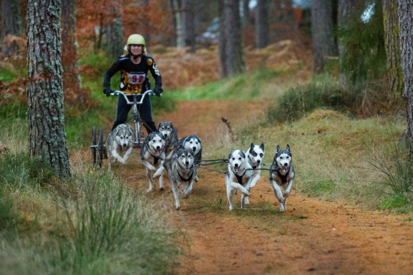

ТАКИЕ РАЗНЫЕ СОБАКИ
Сколько собак во всем в мире?
На планете Земля на сегодняшний день живет порядка 525 миллионов собак. Для того, чтобы представить насколько велико это количество, можем сложить количество людского населения США, Великобритании, Канады, Германии, Италии и Франции. Получим приблизительно тоже количество.
Имя им легион — на планете земля обитает более полумиллиарда собак!
Больше всего собак проживает в Китае - 110 миллионов, в США - примерно 73 миллиона, в Индии - 52 миллиона.
В Бразилии живёт где-то 30 миллионов, в Аргентине - 6,5 миллионов собак, а Колумбии - 5 миллионов.
В западной Европе количество собак, содержащих в качестве домашних питомцев, составляет примерно 43 миллиона. Во Франции — более 8,8 миллионов собак, в Польше и Италии примерно по 7,5 миллионов собак в каждой из этих стран. В Великобритании количество собак составляет примерно 6,8 миллионов.
В России живет около 12 миллионов собак, а в Украине — чуть больше 5,1 миллиона.
Породы собак
Количество известных и общепризнанных пород в мире — около 400. Породы отличаются по типу и размерам: существуют как совсем крохотные собачки весом менее 500 г, так и гигантские особи весом свыше 100 кг. Численность пород постепенно растет, появляются новые разновидности, непохожие на остальных.

Но несмотря на все различия, все собаки относятся к одному виду — собака обыкновенная (canis familiaris) и сохраняют всем хорошо знакомые собачьи черты. Почти все собаки лают, виляют хвостом и радуются компании людей и других собак.
Домашние собаки — это необычайно многообразный вид животных, от грациозных белых овчарок до коротышек-такс.
Но на генетическом уровне все они необычайно схожи. За исключением некоторых физиологических ограничений, они все могут давать общее потомство. Их щенки могут выглядеть забавно (например, как корги), но при этом обычно рождаются здоровыми и способными к размножению.
ДНК почти у всех собак практически идентичные, даже у датского дога и чихуахуа.
Собака - самое разноликое животное на Земле. Тем не менее, люди продолжают выводить новые породы каждый год. Вот, например, голдендудл — смесь золотистого ретривера и пуделя…
Породы собак по классификации кинологических организаций
- 1. Пастушьи;
- 2. Сторожевые и охранные собаки;
- 3. Терьеры;
- 4. Таксы;
- 5. Лайки, шпицы и другие примитивные породы;
- 6. Гончие и собаки, работающие по кровяному следу;
- 7. Собаки, работающие со стойкой (легавые);
- 8. Собаки, поднимающие дичь, апортирующие её и работающие на воде (спаниели и ретриверы);
- 9. Комнатно-декоративные собаки и собаки-компаньоны;
- 10. Борзые.
Роль собаки в жизни людей
Собаки - наши самые близкие и давние партнеры в животном мире. С древних времен собака живет рядом с человеком, она наш друг и помощник. Это первое животное, которое приручил древний человек. Он делился с собакой едой, а та помогала ему на охоте и охраняла его и его жилье
С развитием человечества область применения пород некоторых собак сильно изменилась. Сегодня роль собаки в жизни людей очень важна, она выполняет множество функций.
Собаки-ассистенты
Специально обученные собаки помогают человеку с различными физическими недостатками, слепым, глухим, инвалидам, их называют собака-ассистент (от англ. assist — помогать).С давних пор незрячие люди использовали собак-поводырей для своей защиты в путешествиях. Первым человеком, тренировавшим собак специально в качестве поводырей слепых, был Иоганн Вильгельм Клейн, основатель Института тренировки слепых в Вене. 11 сентября 2001 года собака-поводырь по кличке Дорадо спасла своего слепого хозяина, проведя его с 70-го этажа горящего здания Всемирного торгового центра к выходу.
Собаки-спасатели
Уникальное собачье обоняние спасало жизни многих людей. С XVII века монахи высокогорного монастыря-приюта для путников Сен-Бернар, расположенного на опасном горном перевале в швейцарских Альпах, специально обучали крупных собак, названных впоследствии сенбернарами, для того, чтобы находить людей, попавших в беду после схода лавины или во время снежной бури.
Сегодня спасательную службу собаки несут не только в горах, но и в других уголках мира, в регионах, подверженных землетрясениям.Поисковые собаки и собаки-спасатели помогали обнаружить живых под развалинами Всемирного торгового центра или найти там останки погибших.
Собак специально обучают также и для службы спасения на воде. Основной критерий отбора собаки: она должна уверенно чувствовать себя в воде. Наиболее подходящими по ряду показателей для спасательной службы считаются собаки породы ньюфаундленд.
Собаки-целители
Сенсорная способность собак всё чаще используется для лечения и диагностики больных людей. Специалисты из кинологического центра в британском городе Эйлсбери обучают 17 собак-спасателей чуять гипогликемию носом.
Ян Олвер, руководитель Австралийского совета по борьбе с онкологическими заболеваниями, сообщил, что в ходе научного эксперимента собаки безошибочно определили карциному лёгких и молочной железы, принюхиваясь к дыханию человека, таким образом, удалось «вынюхать» 83 человека с онкологическим заболеванием.
Кроме диагностики болезней собаки также широко используются для реабилитации больных. Лечение людей при помощи собак получило название канистерапия, это одно из направлений пет-терапии.
Некоторые собаки натренированы для помощи людям с эпилепсией. Нейробиологи из университета Флориды (США) обнаружили, что 11 % собак, принадлежащих эпилептикам, по каким-то им одним заметным признакам могут определить, что вскоре начнётся приступ, и дают сигнал хозяину, чтобы он успел подготовиться или принять лекарство: лают или осторожно прижимают зубами ладонь. Собак часто используют для лечения людей с психическими расстройствами, для устранения депривационных симптомов у воспитанников сиротских домов.
Караульные и розыскные собаки
Военные направления дрессировки собак в XX веке привели к появлению курса дрессировки, называемого защитно-караульная служба. По нему готовят как розыскных (ищеек), сторожевых, караульных (телохранителей), так и конвойных собак. В профессиональном собаководстве применяется к собакам служебных пород. Включает в себя:
- - выборку чужой вещи — опознание человека по запаху его вещи;
- - охрана предмета или территории;
- - задержание с окарауливанием и конвоированием;
- - обыск местности на предмет вещей или человека.
Охотничьи собаки
Охотничьи собаки специализируются по способу охоты и виду дичи.
Самая универсальная порода охотничьих собак — лайка. Лайки используются в охоте на пушную дичь, лося, оленя, кабана, медведя, бобра, боровую птицу и утку.
Гончие собаки предназначены для охоты гоном. Найдя след зверя, собака должна преследовать его с лаем до его изнеможения или выставления на охотника.
Норные собаки (терьеры и таксы) используются для охоты на барсука и лисицу в норе.
Легавые собаки используются для охоты на боровую, полевую и болотную пернатую дичь. Пользуясь чутьём, собака разыскивает птицу, останавливается перед ней в характерной напряжённой позе — «стойке», затем по команде охотника бросается вперёд и спугивает её под выстрел, затем находит и приносит охотнику подстреленную дичь.
Ездовые собаки
В условиях крайнего Севера собаки в качестве ездовых животных для людей незаменимы: они выносливы, безотказны, преданы хозяину, проходят по льду и рыхлому весеннему снегу — там, где более крупные животные (олени, лошади) скользят или проваливаются. В пургу собаки стремятся к жилью, их чутьё и инстинкт заменяют компас. С помощью собачьих упряжек проводились исследования Северного и Южного полюса.
Применение собак в упряжках в северных условиях для передвижения людей послужило причиной возникновения ездового спорта. Существует также вид спорта, где собаки тянут не сани, а тележку с грузом или человеком в ней — картинг.
Пастушьи собаки
Пастушьи собаки — собаки разных пород, используемые животноводами как помощники при обращении со скотом: охране скота от хищников и скотокрадов, перегоне стада, розыске и возвращении отбившихся животных, загоне на огороженные участки или в помещения, управлении стадом и отдельными животными при ветеринарном осмотре, стрижке, отборе для убоя, погрузке на транспорт. В современном животноводстве пастушьи собаки работают с большинством видов домашних животных — крупным и мелким рогатым скотом, домашней птицей, ламами, верблюдами, оленями, страусами и другими.
Пиренейская горная собака с отарой овец
Собаки-компаньоны
Понятие «компаньон» стало применяться к собаке, когда человек научился видеть в ней не только защитника, помощника и сторожа, но и личность, товарища, существо, способное испытывать чувства.
Такую собаку заводят главным образом для души, для того, чтобы рядом был четвероногий друг, который никогда не предаст, который легко поддаётся дрессировке, днём терпеливо ждёт хозяев с работы, а вечером с нескрываемой радостью встречает, который любит детей и спокойно относится к другим животным – словом, создаёт гармоничные отношения с миром людей.
Компаньоном может стать любая собака любой породы.